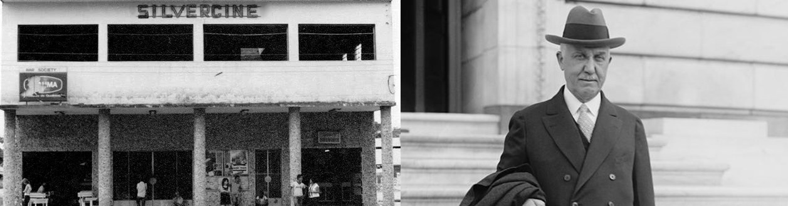

Sobre o SilverCine

O cinema SilverCine foi fundado em 1965 por Roberto Silva Verne na cidade de Passos, no interior de Minas Gerais. Quando foi criado, a ideia era manter como um negócio familiar da família Silva Verne, tanto é que foi a partir daí que surgiu o prefixo "Silver" (Sil: "Silva", ver: "Verne"). Porém, após uma sequência de negociações, o cinema passou para as mãos de outro investidor de Passos, Francisco José de Oliveira, em 1999, que resolveu expandir o cinema, que antes possuía apenas uma sala e tecnologia obsoleta. Agora, depois de 54 anos, o SilverCine oferece uma grande variedade de filmes, disponíveis em cinco salas de cinema com poltronas confortáveis e ampla visão e com o melhor da tecnologia 2D e 3D.
Linha do tempo
1965:
Inauguração do SilverCine com exibição do vencedor do Oscar naquele ano, o longa My Fair Lady;
1980:
O SilverCine passa para as mãos do filho de Roberto, o jovem Bernardo Silva Verne;
1987:
É criada uma filial em Itaú de Minas, gerida por Luiz Silva Verne;
1990:
Torna-se inviável manter a filial em Itaú, fazendo com que ela seja vendida;
1998:
Bernardo muda seu ramo de investimentos e passa o SilverCine para Luiz;
1999:
Luiz começa uma série de negociações com Francisco José de Oliveira e vende o SilverCine para ele;
2002:
O SilverCine é reformado, contando agora com mais duas salas e maior conforto, além de uma tela maior;
2004:
Francisco José investe no cinema 3D no SilverCine;
2005:
O terreno ao lado do cinema é comprado e mais duas salas são construídas, contabilizando cinco salas;
2006 - atualmente:
Francisco José continua investindo em tecnologia cinematográfica inovadora, além de recursos para manter o bem-estar dos clientes no SilverCine, tornando-o o maior cinema da região.